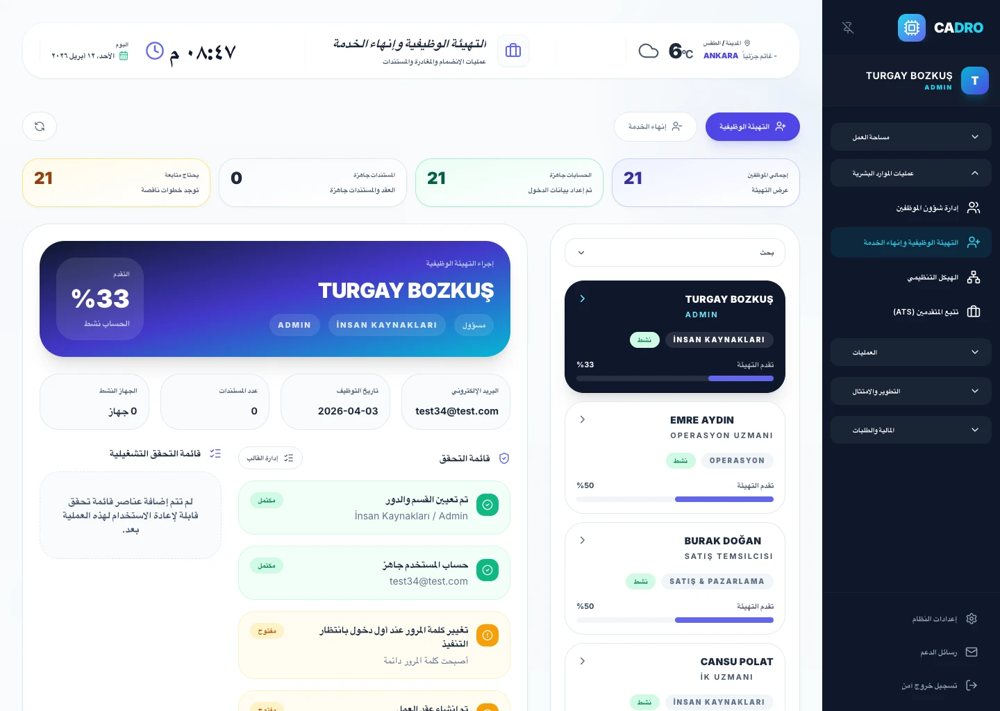

مهام اليوم الأول
خطوات أساسية مثل تسليم الأجهزة وفتح الحسابات والتعريف بالفريق ومراجعة المستندات الإلزامية.

قالب موارد بشرية مجاني
هيكل بسيط لقائمة مراجعة التهيئة لتوحيد عملية بدء الموظف الجديد عبر مهام اليوم الأول والأسبوع الأول والشهر الأول.

ماذا يتضمن؟
خطوات أساسية مثل تسليم الأجهزة وفتح الحسابات والتعريف بالفريق ومراجعة المستندات الإلزامية.
التخطيط للتدريبات واجتماعات المدير ومهام التكيّف حسب الدور.
مساحة لمراجعة التوقعات والتوافق مع الأداء والخطوات الناقصة.
مناسب للفرق التي توظف بسرعة، والشركات التي ترغب في توحيد خطوات التهيئة، وفرق الموارد البشرية التي تسعى لتحسين تجربة الموظف الجديد.
متى يُستخدم؟
توضح هذه الصفحة الحاجة للقالب، ثم تساعدك وحدة التهيئة على بناء نفس التدفق رقمياً.